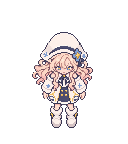

이리스 도트 컨셉
첨부 기준 이미지

01 미니 도트
작은 화면에서도 읽히는 큰 픽셀
02 8색 팔레트
크림·분홍·남색을 포함한 8색
03 16비트 RPG
짙은 외곽선과 단정한 음영
04 고밀도 도트
눈과 금장까지 읽히는 섬세한 도트
05 파스텔 도트
밝은 라일락 음영과 부드러운 색 경계
06 아케이드 도트
굵은 테두리와 선명한 색 대비
07 셀 셰이딩 도트
큰 두 단계 명암과 적은 테두리
08 디더링 도트
그늘에 교차 픽셀을 넣은 복고 질감
09 다면 도트
계단진 삼각 면으로 만든 명암
10 둥근 치비 도트
큰 머리와 짧고 둥근 팔다리